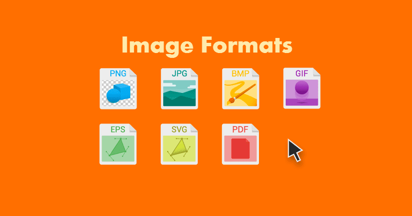
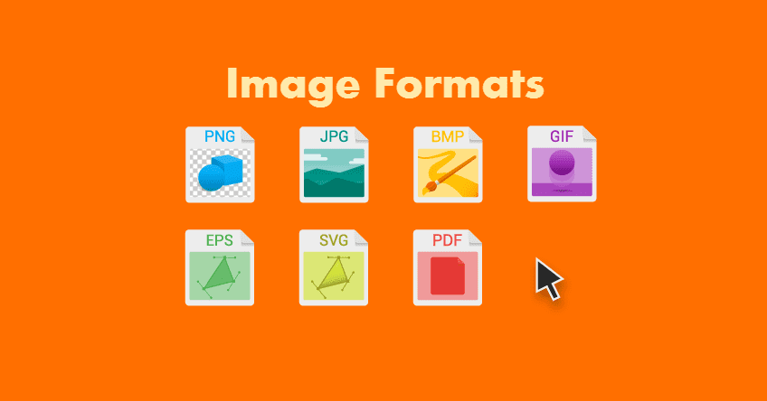
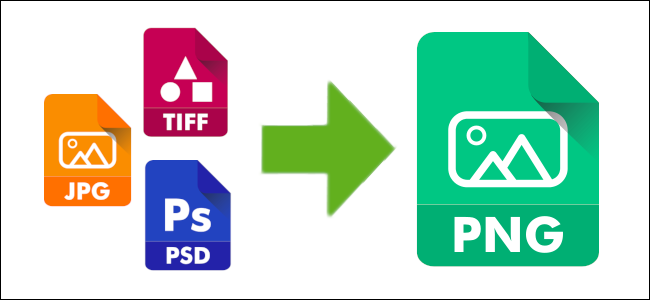

Ce sunt formatele de imagine?
Formatele de imagine, cunoscute și sub numele de formate de fișiere de imagine,
sunt de fapt un mod de stocare a acelor date de imagine
fără a fi nevoie să le comprimăm, deși pot fi comprimate (pierzând sau nu date) sau transformate în vectori.
Pe scurt, vorbim despre un fișier digital care conține toate datele necesare pentru formarea imaginii. Aceste date sunt pixeli, deoarece este ceea ce alcătuiește imaginea. Fiecare dintre acești pixeli este alcătuit dintr-un număr de biți care sunt utilizați pentru a determina culoarea fotografiei. Prin urmare, în funcție de formate, o imagine poate avea o calitate mai bună sau mai slabă. 
Pe scurt, vorbim despre un fișier digital care conține toate datele necesare pentru formarea imaginii. Aceste date sunt pixeli, deoarece este ceea ce alcătuiește imaginea. Fiecare dintre acești pixeli este alcătuit dintr-un număr de biți care sunt utilizați pentru a determina culoarea fotografiei. Prin urmare, în funcție de formate, o imagine poate avea o calitate mai bună sau mai slabă. 
Criterii de alegere a formatelor de imagini
- Dacă imaginile sunt destinate pentru Web sau mobil, utilizați JPEG , PNG sau GIF.
- Dacă imaginile trebuie să apară în material imprimat, utilizați TIFF.
- Dacă doriți să păstrați o versiune care rămâne editabilă, alegeți formatul de fișier nativ al software-ului, cum ar fi .PSD pentru Photoshop.

Cele mai întâlnite tipuri de fișiere (formate) imagine
1) JPEG (si JPG) — Joint Photographic Experts Group
JPEG (sau JPG) este un format de fișier de imagine rastru cu compresie cu pierderi care îl face potrivit pentru partajarea imaginilor. JPEG-urile sunt „lossy”, ceea ce înseamnă că reduc dimensiunea fișierului, dar și calitatea imaginilor atunci când utilizați formatul. JPEG este în continuare unul dintre cele mai utilizate tipuri de fișiere de imagine pe care le veți vedea pe internet datorită compresiei sale și a suportului practic universal pentru browser / sistem de operare.
Cazuri de utilizare:
- O alegere bună pentru blog și imagini de articole, cum ar fi fotografii portret, imagini de produs și multe altele.
- Nu utilizați JPEG pentru infografii cu o mulțime de text mic sau capturi de ecran tutoriale unde textul este cheia.
2) PNG — Portable Network Graphics
PNG este un format grafic rastru care acceptă compresia fără pierderi,
menținând detaliile și contrastul între culori. În special, PNG oferă o lizibilitate
a textului mult mai bună decât JPEG. Acest lucru face din PNG o alegere mai populară pentru infografice, bannere,
capturi de ecran și alte elemente grafice care includ atât imagini, cât și text.

Cazuri de utilizare:
- O alegere bună pentru infografii, bannere, grafice de blog, capturi de ecran, cupoane și alte imagini care includ text.
- Nu utilizați pentru fotografii de înaltă rezoluție, deoarece va crea fișiere mari de până la câțiva megaocteți.
3) GIF — Graphics Interchange Format
GIF este un alt tip de fișier imagine care se încadrează în formatul rastru. Folosește compresie fără pierderi, dar „constrânge” imaginea la 8 biți pe pixel și o paletă limitată de 256 de culori. Formatul GIF este cel mai faimos (și cel mai utilizat) pentru imaginile animate, deoarece limitarea sa de 8 biți menține dimensiunile fișierelor de animații mici și prietenoase cu internetul.
Cazuri de utilizare:
- Utilizați GIF-uri animate nu doar pentru a „condimenta conținutul”, ci pentru a demonstra cum să finalizați sarcinile în tutoriale și ghiduri.
- Nu-l utilizați dacă aveți nevoie de imagini color mai mari de 8 biți (JPEG acceptă până la 24 de biți).
WebP este un format de imagine dezvoltat special pentru a asigura o mai bună compresie fără pierderi și pierderi a imaginilor . Comutarea de la JPEG și PNG la WebP poate ajuta la economisirea spațiului pe server și a lățimii de bandă semnificative, cu fișiere de imagine cu până la 35% mai mici pentru o calitate identică.
Cazuri de utilizare:
- Stocarea și pregătirea imaginilor și graficelor pentru publicare.
- Folosit de mai multe scanere pentru a păstra calitatea documentelor sau imaginilor scanate.